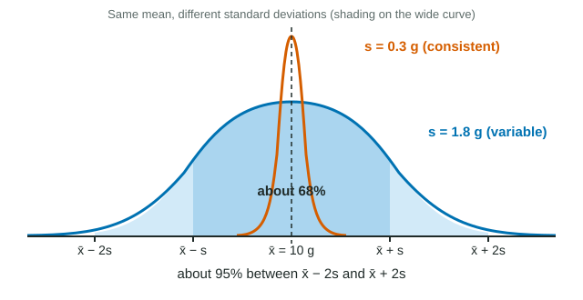

Beyond the range
Heat unfolds (denatures) the proteins in egg white, the unfolded chains tangle, and the clear liquid turns white and firm. Five eggs in an 85 °C water bath set in 62, 58, 66, 60 and 64 seconds. The range, 66 − 58 = 8 s, describes their spread using only the two extreme values. The standard deviation uses every value, and the standard error builds on it to say how well you know the mean. Both are on the formula sheet, and the exam expects you to calculate and interpret them.
Worked example: standard deviation
Data: 62, 58, 66, 60, 64 s (n = 5). Formula: s = √[ Σ(xi − x̄)² ÷ (n − 1) ]
| x (s) | x − x̄ (s) | (x − x̄)² (s²) |
|---|---|---|
| 62 | 0 | 0 |
| 58 | −4 | 16 |
| 66 | 4 | 16 |
| 60 | −2 | 4 |
| 64 | 2 | 4 |
- Mean: x̄ = 310 ÷ 5 = 62 s.
- Sum of squared deviations: 0 + 16 + 16 + 4 + 4 = 40 s².
- Divide by n − 1 = 4: 40 ÷ 4 = 10 s².
- Square root: s = √10 = 3.16 s.
Why square? The deviations add to zero (−4 − 2 + 0 + 2 + 4 = 0), so their plain average tells you nothing. Squaring makes them all positive; the square root at the end puts the answer back in seconds. Why n − 1? The deviations are measured from the sample's own mean, which sits a little closer to the data than the true mean would; dividing by one less than n corrects for that.
Worked example: standard error
Formula: SEx̄ = s ÷ √n. For the 85 °C eggs: SE = 3.16 ÷ √5 = 3.16 ÷ 2.236 = 1.41 s.
For five eggs at 75 °C, s = 8.2 s: SE = 8.2 ÷ 2.236 = 3.7 s.
The standard error estimates how much the mean would shift if you repeated the whole experiment with five new eggs. A mean of several values wobbles less than any single value, and the more values, the less it wobbles.
What SD and SE mean

Many biological measurements, such as set times or protein content, pile up around the mean in a symmetric, bell-shaped normal distribution (see the curves). For such data:
- about 68% of values lie within 1 SD of the mean (x̄ ± s);
- about 95% lie within 2 SD (x̄ ± 2s);
- almost all (about 99.7%) lie within 3 SD.
| Standard deviation (s) | Standard error (SE) | |
|---|---|---|
| Question it answers | How much do individual values vary? | How precisely is the mean known? |
| Formula | √[Σ(x − x̄)² ÷ (n − 1)] | s ÷ √n |
| More data (larger n) | Stays about the same | Shrinks (÷ √n) |
| Units | Same as the data | Same as the data |
Two cereals both average about 10 g of protein per 100 g. Cereal A's boxes have s = 0.26 g/100 g; cereal B's have s = 1.75 g/100 g, with boxes from 7.9 to 12.1. Same center, very different consistency: the standard deviation exposes what the mean hides.
How sample size changes SE
Because SE = s ÷ √n, the standard error falls with the square root of the sample size. To halve SE you need four times as many values; to cut it to a third, nine times as many. Cereal B with 6 boxes has SE = 1.75 ÷ √6 = 0.71 g/100 g. With 24 boxes, SE = 1.75 ÷ √24 = 0.36 g/100 g. The boxes are no more alike; the mean is simply better pinned down.
Common slips
- Dividing by n instead of n − 1. With 5 values this makes s about 11% too small.
- Forgetting the square root, which leaves the answer in squared units (s²).
- Reporting SE as if it described how variable the individuals were. It is smaller than SD only because of the ÷ √n.
- Comparing raw SDs of measurements of very different sizes. The 65 °C eggs (mean 410 s) had s = 24.7 s, much larger than the 85 °C eggs' 3.2 s, yet both are about 5-6% of their means.